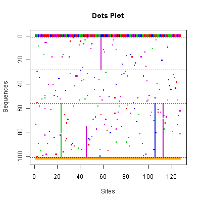
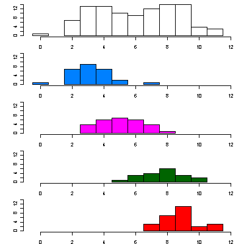
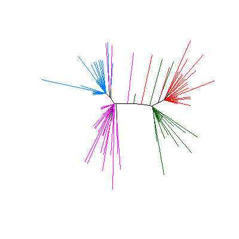

#### Demo -- An example for quick start.
You can get starting quickly with <code>phyclust</code> by using the
<code>demo()</code> command in <code>R</code>.
This demo will produce the three plots, and some of the results
in the following.
```
R> library(phyclust)
R> demo("toy", package = "phyclust")
```
We have prepared a simulated data set <code>seq.data.toy</code>
with 100 nucleotide sequences of length 200 sites from 4 clusters.
The ancestral sequences were simulated using the HKY85 model
(Hasegawa et al. 1985) along a tree of height 0.15
(expected number of mutations per site).
The observed sequences were simulated along independent trees with
height 0.09 descending from the ancestors.
<table cellpadding="5">
<tbody>
<tr>
<td> </img> </td>
<td>
Each row represents a sequence and each column represents a site.
The chosen sequence is fully colored, with green, blue, purple and red
representing nucleotides
<b><font color="#00CD00">A</font></b>,
<b><font color="#0000EE">G</font></b>,
<b><font color="#CC00CC">C</font></b>, and
<b><font color="#EE0000">T</font></b>.
All other sequences show only mutant sites compared to the consensus
sequence drawn in the first row.
The dashed lines separate the clusters.
The bottom row indicates the segregating sites, i.e. those sites
containing at least one mutation. </td>
</tr>
<tr>
<td> </img> </td>
<td>
This shows the number of mutations of all sequences within
each cluster relative to the chosen reference sequence.
The top plot is for the whole data set.
The other plots are for the four clusters. </td>
</tr>
<tr>
<td> </img> </td>
<td>
The resulting tree with branches colored according to the clusters
defined in argument <code>X.class</code>.
These clusters may be provided by the user
(as is the case here) or as a result of inferring the clusters
using <code>phyclust()</code>. </td>
</tr>
</tbody>
</table>
This gives an example of the function <code>phyclust()</code> with
changed option by <code>.EMControl()</code>.
```
> EMC.2 <- .EMControl(init.procedure = "emEM")
> set.seed(1234)
> (ret.2 <- phyclust(X, 4, EMC = EMC.2))
Phyclust Results:
code type: NUCLEOTIDE, em method: EM, boundary method: ADJUST.
init procedure: emEM, method: randomMu.
model substitution: JC69, distance: D_JC69.
iter: 103 8725 0, convergence: 0, check.param: 1.
eps: 2.753e-14, error: 0.
N.X.org: 100, N.X.unique: 87, L: 200, K: 4, p: 804, N.seg.site: 127.
logL: -1379, bic: 6461, aic: 4367, icl: 6469
identifier: EE
Eta: 0.2700 0.1898 0.2801 0.2602
Tt: 0.003074
n.class: 27 19 28 26
> RRand(ret.2$class.id, X.class)
Rand adjRand Eindex
1.0000 1.0000 0.1209
```
---
<div w3-include-html="../preamble_tail_date.html"></div>